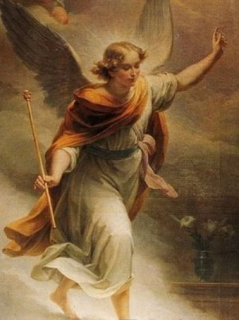
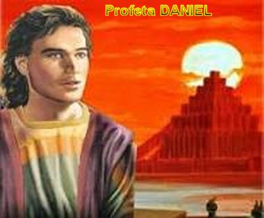
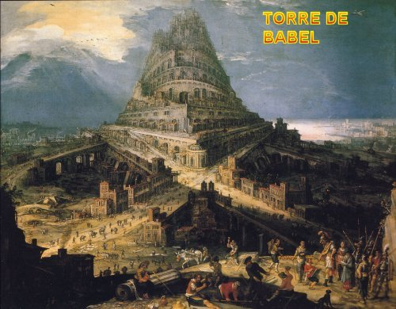
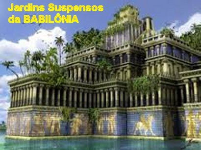
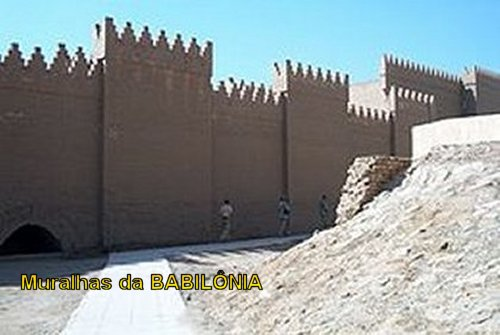
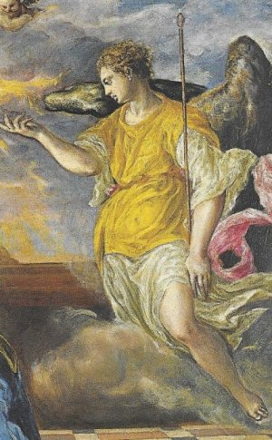
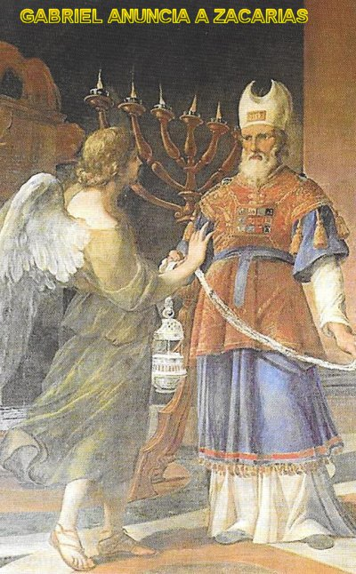
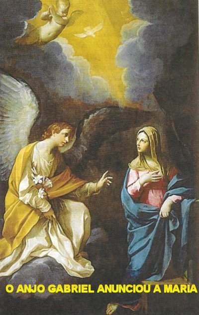
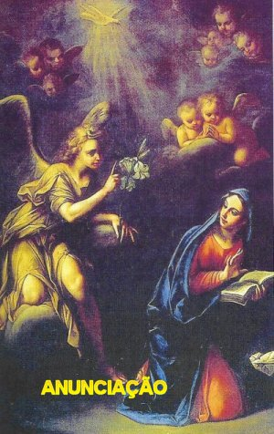

“MENSAGEIRO DAS BOAS NOTÍCIAS”

PROFUNDO MISTÉRIO
Aos Anjos foi revelado pela primeira vez o mistério escondido em DEUS desde toda a eternidade: "O mistério Divino de JESUS, um mistério admirável do amor de DEUS por toda humanidade."
Particularmente, o Arcanjo São Gabriel se constituiu num registro de significativa importância no mistério de JESUS, que se fez homem para a nossa salvação. A ele foi confiada à “missão de Anunciar a Encarnação do FILHO DE DEUS” através do Profeta Daniel, no Antigo Testamento, assim como no Novo Testamento anunciou a Zacarias o nascimento do seu filho João Batista com a sua esposa Isabel, e principalmente, anunciou à própria VIRGEM MARIA, o nascimento do Seu FILHO JESUS.
Desse modo, aqui começaremos a evidenciar os encontros e as palavras bíblicas do emissário Divino, Arcanjo São Gabriel, feitas primeiro ao profeta Daniel, assim como aquelas proferidas ao sacerdote Zacarias, e na continuidade, as inesquecíveis palavras conversadas com MARIA, a MÃE de JESUS. Ele é considerado “O Anjo da Encarnação, o Anjo da Palavra, o Anjo da Esperança e da Paz, o Anjo da Alegria”.
GABRIEL COM O PROFETA DANIEL

Ele nasceu em Jerusalém em 620 a.C. (antes de CRISTO), e desde jovem, foi levado para o cativeiro na Babilônia em (606 a 605) a.C., também conhecida como Babel, que era a terra ocupada pelos caldeus, onde ele foi educado, mas nunca se converteu as crenças pagãs dos babilônios. A sua deportação aconteceu, em consequência da guerra realizada por Nabucodonosor II, Rei da Babilônia que invadiu o território judeu e conquistou Jerusalém, roubando todos os valores do Templo, destruindo a cidade e levando prisioneiros diversos jovens escolhidos, a fim de serem educados e preparados para cargos importantes no Governo da Babilônia. Além de Daniel, Nabucodonosor II também levou Ananias, Misael, Azarias, e outros rapazes que eram filhos de judeus, pessoas inteligentes e de boa aparência, com o mesmo objetivo, de prepará-los para servirem ao Rei.
A Babilônia era um país com uma área aproximada de 30.000 metros quadrados, pouquinho maior que o nosso Estado de Sergipe, e que estava situada na região chamada Mesopotâmia, limitada pelo Rio Eufrates e o baixo Tigre, e na parte inferior do território, está o Golfo Pérsico. Hoje, só existem ruínas que se encontram ao norte da cidade de Al-Hillah, capital da Província de Babil, no Iraque, a cerca de 100 quilômetros de Bagdá.
Naquela época, a Babilônia cresceu e se desenvolveu, atingindo o seu grande poder com o Rei Nabucodonosor II (604-561) antes de CRISTO. A economia do país atingiu valores apreciáveis cultivando intensamente a agricultura, a qual aproveitava a boa fertilidade do terreno e a fácil irrigação do mesmo. As águas do Tigre e do Eufrates eram distribuídas por toda Babilônia, através de canais, que irrigavam o solo. As enchentes anuais entre os meses de Março a Junho facilitavam a irrigação. Tornou-se um grande país militarmente e de grande poder comercial, com obras notáveis: grandiosos monumentos, admiráveis construções, uma Grande Muralha que protegia o centro populoso o qual podemos chamar de capital, onde existiam os famosos “Jardins Suspensos da Babilônia”, mas que até hoje ninguém conseguiu encontrar os seus vestígios, e também onde consta que existiu a famosa “Torre de Babel” , citada nas Sagradas Escrituras, mas que também não deixou vestígios. Todavia, os sucessores de Nabucodonosor não tiveram o mesmo empenho no trabalho e a mesma inspiração administrativa, resultando que depois da morte dele, o país entrou numa abominável decadência. No ano de 539 a.C., Ciro, o Rei da Pérsia, em luta armada, invadiu e conquistou a Babilônia anexando todo o território ao seu país, fazendo com que a Babilônia se tornasse uma província do reino persa.



Mas anteriormente, com Nabucodonosor II, a Babilônia era poderosa e respeitada. Os prisioneiros, principalmente Daniel e seus amigos, cumpriam pacientemente e sem alardes o seu cativeiro, trabalhando com seriedade, como servidores do Rei. E como tinham uma boa base de instrução, passaram a pertencer a um grupo de rapazes mais selecionados, que eram denominados “Conselheiros do Rei”. Com a morte de Nabucodonosor II, embora não sendo seu filho, Baltazar foi um dos sucessores do Rei, que o substituiu no Governo da Babilônia. Certa noite o Rei Baltazar teve um sonho que o deixou preocupado, e por isso mesmo, mandou chamar Daniel que já ocupava um cargo importante no Governo, a fim de explicar o que significava aquela visão em sonho.
Daniel ouviu todo o relato do Monarca e antes de lhe adiantar qualquer palavra, pediu licença para pensar e meditar sobre “o sonho” que acabava de ouvir. E então, enquanto pensava e buscava linhas de raciocínio, eis que lhe apareceu o Arcanjo São Gabriel, enviado por DEUS, para lhe explicar aquela visão noturna do Rei, uma visão misteriosa e difícil de ser entendida. O encontro foi assim:
Enquanto Daniel raciocinava sobre o sonho do Rei, surgiu diante dele, a pouca distância, uma aparência de homem, que estava de pé no meio do Rio Ulài, olhando firme para ele. No ato seguinte, ele ouviu a voz daquele homem, uma voz forte e clara, dizendo-lhe incisivamente: “Sou Gabriel, e vim lhe esclarecer a visão!” E assim falando, caminhou na direção onde Daniel se encontrava. Era um homem forte, com bonitos e delicados traços fisionômicos, e a pele ligeiramente bronzeada, com um intenso e maravilhoso brilho. Tão forte era a luminosidade que emanava dele, que Daniel para enxergá-lo melhor, as vezes tinha que fazer conchinha com a mão em cima da sobrancelha, para proteger os seus olhos, e poder observá-lo. E por isso, assim que ele se aproximou, Daniel impressionado com tão bela e brilhante visão, tomado de grande respeito e temor, ajoelhou-se rapidamente prostrando-se com o rosto no chão. O Arcanjo ajudando-o a se levantar, disse: "Filho do homem, fica sabendo que a visão se refere ao Tempo do Fim". (Dn 8,15-17)
Este aviso fazia referência ao período dos anos 167 a 164 a.C., durante a perseguição de Antíoco Epifânio, antes da insurreição macabaica.
Por outro lado, analisando o Arcanjo em si, e querendo entender o seu admirável aspecto, com sua maravilhosa aparência fulgurosa e intensamente brilhante, São Jerônimo disse: "os Anjos não são homens, são espíritos celestes, mas aparecem em forma humana para amenizar o impacto da sua visita gloriosa, facilitando o bom relacionamento e o entendimento com a humanidade, em cada caso".
O CRIADOR ao instituir os Anjos, os fizeram com “pleno e livre arbítrio”, e os instituiu de uma só vez, concedendo-lhes virtudes, dons e sabedoria, em graus diferentes, conforme se conhece em parte, pela graduação da Hierarquia Angélica, que magistralmente foi inspirada e escrita por São Tomás de Aquino. Os Anjos tem a finalidade eterna de servir ao SENHOR DEUS e de colaborar efetivamente, na salvação da humanidade.
O Arcanjo São Gabriel apareceu
uma segunda vez a Daniel para lhe explicar a visão das "setenta semanas" e o “tempo da vinda
do Messias”, com o surgimento de 
A visão das “setenta semanas” se refere ao tempo da libertação e reconstrução de Jerusalém. É um texto difícil, porque enunciado encima de comparações com acontecimentos da época, e a formulação de muitas imagens, exigindo um profundo conhecimento histórico e atenção minuciosa, para ser entendido.
A Aparição do Arcanjo aconteceu assim: a época do primeiro ano do Rei Dario, da raça dos medos, que assumiu o reino dos caldeus, e se apoderou da Babilônia, Daniel rezava e conversava com o SENHOR DEUS. Pedia e implorava, dizendo que estava flagelando o seu corpo com cilício e jejuando, rezando e confessando os seus pecados, e aqueles do seu povo de Israel, fazendo súplicas ao SENHOR DEUS pelas ruínas de Jerusalém, pedindo o auxilio Divino, no sentido de que a sua pátria fosse reconstruída, quando o Arcanjo Gabriel lhe apareceu outra vez. O Arcanjo surgiu num vôo rápido, pela hora da oblação da tarde. Ele veio para conversar com Daniel e disse: "Daniel, eu vim para te instruir na inteligência." (Dn 9,20-22)
DEUS enviou o Arcanjo, para relatar a Daniel, fatos que ele não conseguia entender, e sendo ele digno do amor de DEUS, o SENHOR quis lhe proporcionar conhecer os Segredos Divinos e saber tudo aquilo que ia acontecer no futuro. São Jerônimo escreve explicando que Gabriel apareceu "não como Anjo ou Arcanjo”, mas como “um simples homem” , mostrando as suas qualidades viris e sábias, com a finalidade da sua gloriosa presença não assustar e não perturbar Daniel; e também, completa São Jerônimo: "Como Daniel mesmo confirmou a visita,na hora do sacrifício da tarde, porque a oração do Profeta durava desde o sacrifício da manhã até o sacrifício da tarde, e que no caso, significava dizer que o Arcanjo lhe apareceu à tarde, durante a oblação que ele fazia a DEUS". Assim sendo, o Arcanjo lhe aparecendo naquele momento à tarde, quando ele como sacerdote incensava o Altar e rezava a DEUS, fica plenamente justificada a atitude de Daniel, que se inclinou até o chão também desta vez, como maneira respeitosa de cumprimentar e receber o Arcanjo, e de agradecer à sua carinhosa visita, proporcionada pela imensa e adorável misericórdia de NOSSO SENHOR.
As duas intervenções do Arcanjo São Gabriel ao Profeta Daniel são relevantes. Pela primeira vez nas Escrituras Sagradas a figura de um Anjo assume uma atitude mais pessoal ao ponto de ser chamado com um nome (no caso Gabriel). Mas isto aconteceu como testemunho de amor, como manifestação da bondade Divina, pela santidade e fidelidade que Daniel sempre revelou ao longo da sua existência.
COM O SACERDOTE ZACARIAS

Era um anúncio de esperança, ou seja, era afinal o nascimento de João Batista, seu filho e da sua esposa Isabel, mas que era também o cumprimento da esperança messiânica de Israel. Na verdade, as palavras de Gabriel são muito preciosas e valem tanto para a humanidade, como para o próprio Zacarias, que ofertava incenso em sacrifício no Santuário em nome do povo de DEUS.
João Batista terá a missão de converter os corações dos filhos e dos pais, dos desobedientes e dos ingratos, conformando-os segundo a prudência dos justos, e preparando o coração das pessoas para a chegada do SENHOR.
Desta forma, o Arcanjo Gabriel revelou a Zacarias que a criança que ia nascer, além da esperança pela Graça Divina, se tornaria o Profeta da Redenção que será realizada por CRISTO, que também, em virtude da bondade do SENHOR DEUS, ele Zacarias, anunciará a vinda do glorioso Messias.
Desconfiadamente Zacarias perguntou ao Arcanjo: “De que modo saberei disso? Pois eu sou velho e minha esposa é de idade avançada.” (Lc 1, 18)
O Arcanjo percebeu a incredulidade de Zacarias e mudou a sua linguagem e as suas ações. Assim, pelo fato dele "não crer" , determinou que ele ficasse "mudo". A resposta do Arcanjo foi assim: “Eu sou Gabriel; assisto diante de DEUS e fui enviado para anunciar-te esta boa nova. Eis que ficarás mudo e sem poder falar até o dia em que isso acontecer, porquanto não creste em minhas palavras, que se cumprirão no tempo oportuno.”(Lc 1, 19)
Esta ação do Anjo quer nos dizer que não podemos duvidar do poder dos Santos Anjos! Quem escuta o Anjo que foi enviado por DEUS, escuta DEUS, pois ele fala em nome de DEUS.
O povo que esperava por Zacarias estava admirado com a demora dele. Quando ele saiu, não lhes podia falar. Então compreenderam que algo havia acontecido e que provavelmente, ele tivera uma visão. Falava-lhes por meio de sinais, e permaneceu mudo. Completados os dias do seu ministério, voltou para casa. Algum tempo depois Isabel, a sua esposa, concebeu e gerou o seu filho. Queriam colocar na criança o nome de Zacarias. Mas a mãe disse: “Não, ele vai se chamar João.” (Lc 1,60) Os parentes acharam estranho o nome, porque na família não havia nenhum João, e por isso, através de sinais, perguntaram ao pai. Ele pediu uma tabuinha e escreveu: “Seu nome é João”. (Lc 1, 63). Todos ficaram admirados, e a boca de Zacarias imediatamente ficou desimpedida e ele voltou a falar.
SÃO GABRIEL E A VIRGEM MARIA

Arcanjo Gabriel é o Anjo da Anunciação, o mensageiro de DEUS a VIRGEM MARIA e lhe anuncia sobre a Encarnação de JESUS. Tudo aconteceu maravilhosamente dentro do Plano Divino.
Certa tarde MARIA tinha terminado as ocupações domésticas e descansava em seu quarto. Meditava sobre a verdade dos papiros sagrados, sobre o seu noivado com José e sobre o seu incontido e irrefreável amor por DEUS. Eis que de súbito, lhe apareceu o Arcanjo do SENHOR. MARIA tremeu de emoção... E com o susto do inesperado colocou-se de pé. Muito embaraçada, fitou-o em silêncio. O Arcanjo sorrindo cumprimentou-lhe e disse: "Alegre-te cheia de graça, o SENHOR está contigo"! (Lc 1,28)
Existe em Roma, desde meados do século III dC, no interior do cemitério de Priscilla na Via Salamaria, a primeira imagem que fizeram de um Anjo. Ele representa um mensageiro celeste no momento da Anunciação. A pintura mostra o Arcanjo Gabriel anunciando a MARIA o futuro nascimento do SALVADOR.
Ouvindo a saudação ELA ficou admirada e deve ter pensado: "Mas o que é isto, meu DEUS"? E respondendo ao cumprimento, inclinou levemente a cabeça, permanecendo em silêncio e olhando para ele. O Arcanjo manifestando júbilo procurou tranquilizá-la, dizendo-lhe que era o Arcanjo Gabriel e estava cumprindo as ordens do Céu: "Não tenhas medo MARIA! Encontraste graça junto de DEUS". (Lc 1,30) E revelou que o PAI ETERNO lhe tinha cumulado de graças e que ela era alguém muito especial no Paraíso Divino. E continuou: "Eis que conceberás e darás à luz um filho, e o chamarás com o nome de JESUS. ELE será grande, será chamado Filho do Altíssimo, e o SENHOR DEUS lhe dará o trono de Davi, seu pai; ELE reinará na casa de Jacó para sempre, e o seu reinado não terá fim".(Lc 1,31-33)
As palavras do Arcanjo "já delineavam a infinita grandeza de JESUS, o Filho do Altíssimo, herdeiro de Davi, Filho de DEUS".
Desse modo, o Arcanjo Gabriel é o mensageiro de DEUS, que anuncia a Boa Nova, mas é também "o professor, o pedagogo e o conselheiro". Quando a VIRGEM MARIA lhe perguntou: "Como é que vai ser isso, se eu não conheço homem algum?" (Lc 1, 34) ELA recebeu de São Gabriel a confirmação e a explicação necessária com as seguintes palavras:
"O ESPÍRITO SANTO virá sobre TI e o poder do ALTÍSSIMO TE cobrirá com TUA sombra; por isso o SANTO que nascer será chamado FILHO DE DEUS". (Lucas 1,35)
MARIA sentiu aquela majestosa alegria interior que traduzia imensa satisfação. DEUS correspondia ao seu amor, ao seu profundo e ardente amor que a ELE havia consagrado com todo o ímpeto da sua alma e com a maior intensidade da sua vida. Atenta e deliciando a sublimidade do amor Divino, MARIA DE NAZARÉ silenciosamente continuou ouvindo as palavras do Arcanjo: "Também Isabel, tua parenta, concebeu um filho na velhice, e este é o sexto mês para aquela que chamavam de estéril". (Lc 1,36) Aqui devem ter brilhado intensamente os lindos olhos de MARIA, porque ela gostava muito da sua prima e sabia, o quanto ela desejava possuir um filho. E continuou o Arcanjo Gabriel inferindo e argumentando com MARIA, dizendo-lhe que o seu voto de castidade seria preservado, que seria uma conceição milagrosa e completando, afirmou: "Para DEUS, com efeito, nada é impossível". (Lc 1,37)
Houve um silêncio absoluto... A natureza parou, as aves não gorjeava mais, a expectativa era geral...
Para MARIA, no entanto, em toda
a sua simplicidade e modéstia, era uma pausa necessária para respirar, para recuperar
o fôlego dos seus sentidos, tão excitados 
Então disse MARIA: "Eu sou a serva do SENHOR; faça-se em mim segundo a tua palavra!" (Lc 1,38)
A partir daquele instante, DEUS completou o Decreto da Anunciação. O Arcanjo São Gabriel ajoelhou-se respeitosamente diante de MARIA e partiu para a eternidade. Naquele exato momento o ESPÍRITO SANTO DE DEUS se fez presente no interior de MARIA, começava a Santa Gravidez de NOSSA SENHORA.
Com esta missão, o Arcanjo São Gabriel justifica o seu nome, que significa "força de DEUS", "poder de DEUS", e este nome por sua imensa importância, quase nos diz que "é o ponto culminante da criação, (qual seja) a Encarnação do VERBO, é o sinal supremo do PAI ETERNO Todo-Poderoso", em relação à humanidade de todas as gerações.
Então, isto nos mostra, que o Arcanjo São Gabriel, está presente nos acontecimentos mais importantes, sendo ele o Mensageiro Divino na “plenitude dos tempos”, no ponto mais alto da criação, da história da humanidade, como o Anjo da Esperança, esperança que nos é assegurada pela promessa de DEUS, e, portanto, ele se torna com evidência, o Anjo da Alegria e o Anjo da Paz.
E esta realidade pode ser observada em diversos livros da Bíblia Sagrada: "Onde o poder ou a força de DEUS se manifestam, lá é enviado o Arcanjo Gabriel”. E assim, aconteceu naquela época: quando ELE, o SENHOR, estava prestes a nascer junto de nós, e triunfar sobre o mundo, o Arcanjo Gabriel foi enviado a MARIA e LHE anunciou a vinda: “A vinda DAQUELE que humildemente tudo aceitou e veio derrotar os poderes do maligno".
A Anunciação a MARIA inaugura "a plenitude dos tempos" (Gal 4,4) é a ocasião esperada pelos Anjos, a qual propiciou a oportunidade de reabilitação da mulher: “Uma vez que um Anjo caído (sob a forma de serpente) conduziu ao mal uma mulher, agora é justo que a salvação da humanidade começasse também com o anúncio de um Anjo bom, a uma mulher escolhida por DEUS".
Esta é a razão pela qual o Beato Fra Angelico, pintor de Anjos, colocou a sua pintura da Anunciação, na Igreja de San Domenico di Fiesole, em Roma, entre os anos 1430-1432, cuja pintura está agora preservada no Museu do Prado, em Madri. Na pintura, na parte esquerda do quadro, mostra um Querubim expulsando do Paraíso Terrestre Adão e Eva depois que eles pecaram; à direita, sob um pórtico que sugere ser de um Convento, o Arcanjo Gabriel faz a comunicação a MARIA: "DEUS escolheu uma mulher para confiar à concepção, gestação e nascimento do Seu DIVINO e AMADO FILHO”.
Em MARIA não pesava a “lei da culpa do Paraíso Terrestre” (o Pecado Original). “ELA estava isenta dos efeitos do Primeiro Pecado, e nunca pecou, nunca cometeu a falta mais leve, os seus sentimentos estavam longe da tentação, e seu agir sempre foi puro e imaculado". MARIA é a outra Eva, a MÃE de todos os homens, de todos os Santos e de todos os pecadores, a NOVA MÃE, sem qualquer pecado e sem nenhuma influencia do maligno.
PROTETOR DA VIRGEM
MARIA 
Cada dia deve ser repetido muitas vezes à saudação e a proclamação de São Gabriel a VIRGEM MARIA SANTÍSSIMA: “Ave, cheia de graça, o SENHOR está contigo!” (Lucas 1,28) Foi ele quem nos ensinou a dizer: "MARIA Cheia de Graça". Por esta afirmação e outras, ele nos inspira uma profunda devoção, respeito e amor a VIRGEM MARIA. Podemos dizer que DEUS através de São Lucas, nos concedeu saber sobre a grandeza e a imensa dignidade de MARIA. Por outro lado, conforme afirmam com convicção muitos teólogos, o Arcanjo São Gabriel também "foi o Anjo da Guarda da jovem galileia MARIA"! Enquanto MARIA vivia no mundo, na Palestina.
O Servo de DEUS, Frank Duff (1889-1980), fundador da “Legião de MARIA de São Gabriel” dizia que "geralmente se supõe ser ele mesmo, o Anjo da Guarda, o Anjo Custódio de MARIA DE NAZARÉ". Também a Serva de DEUS Irmã Maria Luisa de Jesus de Nazaré (1780-1833), afirmava em suas revelações escritas aprovadas pelo Santo Ofício em 21 de dezembro de 1833, que o “Arcanjo São Gabriel era o Anjo da Guarda de MARIA DE NAZARÉ.”
Então não é difícil de concluir que o Arcanjo São Gabriel, deve ser um Anjo muito amado por DEUS, por ter sido enviado a NOSSA SENHORA, a Querida e Amada MÃE SANTÍSSIMA do SENHOR, com a mensagem da Anunciação, e também, com toda certeza, ele deve ter escolhido o Arcanjo São Gabriel, e tê-lo feito Anjo da Guarda de MARIA DE NAZARÉ, durante os 72 anos de vida terrestre da MÃE DE DEUS.